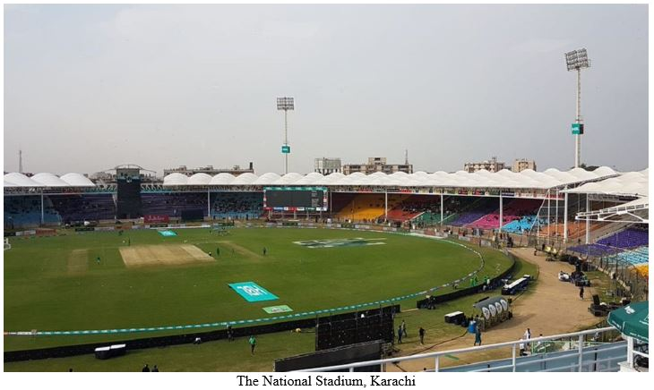
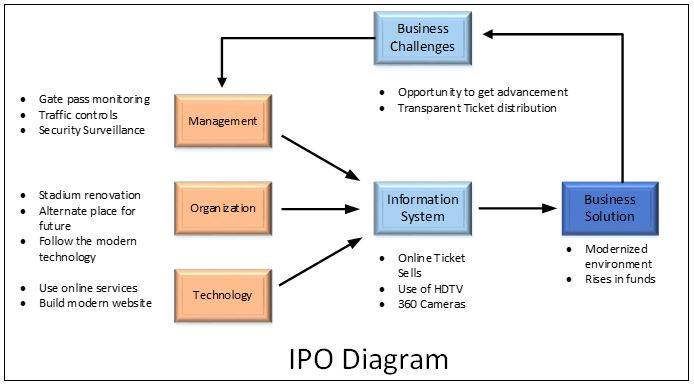
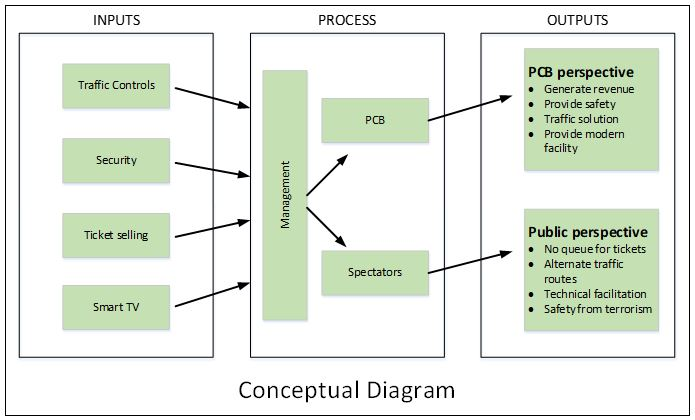

The National Stadium, In Present Perspective
The National Stadium, In Present Perspective
Overview:
The national stadium located in the heart of Karachi, the biggest and the most populated city also known as city of light. This is a cricket stadium, owned by PCB (Pakistan Cricket Board) which was stablished on 21st April in 1955. It has the capacity of 34228 spectators.

Challenges:
In 2009 in Lahore due to terrorist attack on Siri Lankan Team, All the international teams had refused to play in Pakistan, but after a lot of struggles now international teams are ready to play in Pakistan and they played some games as PSL recently. So, Pakistan got an opportunity to get a profitable revenue in this regard. Pakistan made a lot of changes in National stadium and tried to provide strongest security services in recent PSL matches, but there are a lot of some other defects which people of the city had to face. So, to generate a good revenue in this way PCB (Pakistan Cricket Board) has to follow a broad roadmap or suggestions to build a fruitful revenue from this stadium.
Solution:
First of all, PCB has to provide digital way for tickets distribution, if they use digital mechanism then have all records like how many tickets were sold and how many seats still remain, by this way PCB can get one more benefit which is corruption in tickets distribution as some tickets are sold in black which is not a good way to distribute the ticket and no amount is submitted in PCB account. Another thing is the traffic solution, people had to face traffic blockage during tournament which is a cause of problem and difficulty so PCB has to provide some suitable alternates or has to shift stadium to a new place because current stadium is situated in the heart of the city which is a busy place of the city. PCB can also use its website for tickets distribution. PCB had done some works regarding renovation of National Stadium Karachi recently that was a good job but there are still a lot of things which can be done in the development of this stadium like there can be used High-Definition HD Screen to facilitate the spectators to keep up to date with every moment. For security surveillance PCB has to use 360 HD Dome cameras to monitor the whole area as well as use armed forces at different check post and collect intelligence report from secret intelligence. If PCB arrange alternate place for stadium then a lot of problems can be solved like near the current stadium, roads are very narrow so, people have to face heavy traffic jams and there are very less hotels near the stadium so foreigner has less facility to stay the nearest hotel. Two biggest hospital like Liaqat National Hospital and Aga Khan Hospital are situated adjacent the stadium so people also have to face issues to go to the hospitals.

